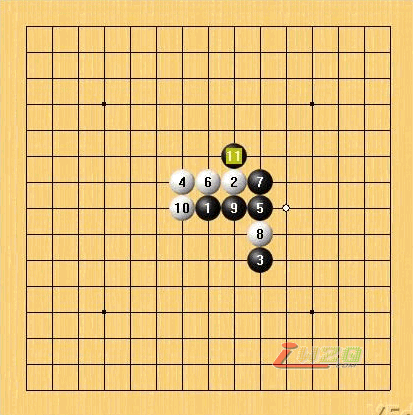

被忽视的11白能胜吗?

两个17强防总算搞定!其中E9最强防.
18攻击好点.20好棋,此时左上白优势很大,黑难防.右下黑无胜.
19防外面.
17E9最强,白18,20,22构思非常巧妙.黑无反击机会,白左边优势逐渐扩大.
21F8
21E7强
后续更多内容见本站五子棋在线教室的教学录像：
classroom.asp?act=enter&id=110
这里可以对棋谱进行拆解。
有志大哥,上面的教学录象能下载下来看吗?还是一定要在线看啊?
目前来说只能在线看哟，何时的时候可能会推出iwzq教室专用播放器之类的软件，这个目前还只是构想。